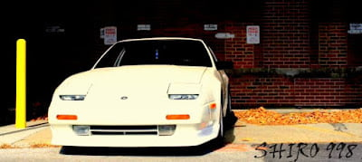

-
Re: Has anyone found "Bump Steer Spacers"
No one answered my question really........do you all want v1 or v2(russ's spacers)"Its the s12's sexy over weight step daughter, the z31" -
Re: Has anyone found "Bump Steer Spacers"
Put me down for a set and doesn't matter which version.Sbsperformance-cylinder head service and porting specialist. Shoot me a pm for porting specials and now offering a low low price for intake manifold porting! Now offering ceramic and thermal dispersant coating! -
Re: Has anyone found "Bump Steer Spacers"
I'd be gold with some v1's.nismopu wrote: No one answered my question really........do you all want v1 or v2(russ's spacers) -
Re: Has anyone found "Bump Steer Spacers"
V1 would be fine with me. Wouldn't mind having another set as a spare or for another Z project.
1986 300ZX Turbo…sold
1990 Skyline GT-R…new money pit
2014 Juke Nismo RS 6-speed…daily -
Re: Has anyone found "Bump Steer Spacers"
not sure what the differences between v1 and v2 i guess i just want something that works so whichever is cheaper since i need 2 sets unless they are close in price and one is leaps and bounds better.86 NA
87 Turbo
Member of the "zetto sun-ichi" group
Local MN car forum/club anyone welcome..... fivezeroseven.net join! -
Re: Has anyone found "Bump Steer Spacers"
V1 would work for me!Shiro Special #998

-----------------------------------
86T - Sold -
Re: Has anyone found "Bump Steer Spacers"
V1 phô shizzle.

1988 300zxt. gt35, stance, etc. Wheels: Varrstoen ES2 18x9.5 et-13 225/40. 18x10.5 et0 245/40
1990 jetta vr6'd -
Re: Has anyone found "Bump Steer Spacers"
Count me in for a V1, I really doubt people will want to spend $300+ for a V2 when a V1 can be had for 1/3 the price (unless the prices for either versions have changed since I last checked)1988 SS #71
Better to remain silent and be thought a fool, than to speak and remove all doubt. -
Re: Has anyone found "Bump Steer Spacers"
n00b here, not sure why these are needed. i read the linked topic and if my understanding is correct, its so you can get the correct or desired alignment and not tear up as many steering components. am i in the ballpark? really need this barney style lol -
Re: Has anyone found "Bump Steer Spacers"
I spoke with the powers that be and I will be doing a v1 run to get people by for now.
PM me to get a set!"Its the s12's sexy over weight step daughter, the z31" -
Re: Has anyone found "Bump Steer Spacers"
When lowering a Z31 more than ~1" (Or any car, really…), you cause the control arms and tie rods to start to be angled upward more, as well as cause them to not necessarily be at the same angle throughout suspension travel. If the angle of the tie rod and the control arm doesn't match, when the suspension travels (moves), the tie rod will move at a different rate and angle than the control arm which causes bump steer. Bump steer is when the car steers when hitting a bump…Heimdahl wrote: n00b here, not sure why these are needed. i read the linked topic and if my understanding is correct, its so you can get the correct or desired alignment and not tear up as many steering components. am i in the ballpark? really need this barney style lol
A bump steer spacer moves the control arms and tie rods angle downward to return them as close as possible to OE specs, fixing suspension geometry. Once geometry is fixed, the tie rods and control arms will move together at the same angle and rate again, preventing bump steer.- VG30DET (HE341) 86 300ZX - 1982 280ZX Turbo - Headered NA 1986 300ZX 2+2 - 2000 Xterra - -
Re: Has anyone found "Bump Steer Spacers"
See the pic I posted last page, then compare that to what your control arms look like with your car on the ground. Now imagine what kind of angle that arm will be at once the car gets lowered another inch.
1988 300zxt. gt35, stance, etc. Wheels: Varrstoen ES2 18x9.5 et-13 225/40. 18x10.5 et0 245/40
1990 jetta vr6'd -
Re: Has anyone found "Bump Steer Spacers"
Workin out a price folks, be patient. Will have something nailed down this weekend for sure!"Its the s12's sexy over weight step daughter, the z31" -
Re: Has anyone found "Bump Steer Spacers"
Love you brohiem.nismopu wrote: Workin out a price folks, be patient. Will have something nailed down this weekend for sure!
No Homo. -
Re: Has anyone found "Bump Steer Spacers"
In for a set of V1's.Tinker Toy Equipped


Copyright © 2006–. All rights reserved. Privacy Policy